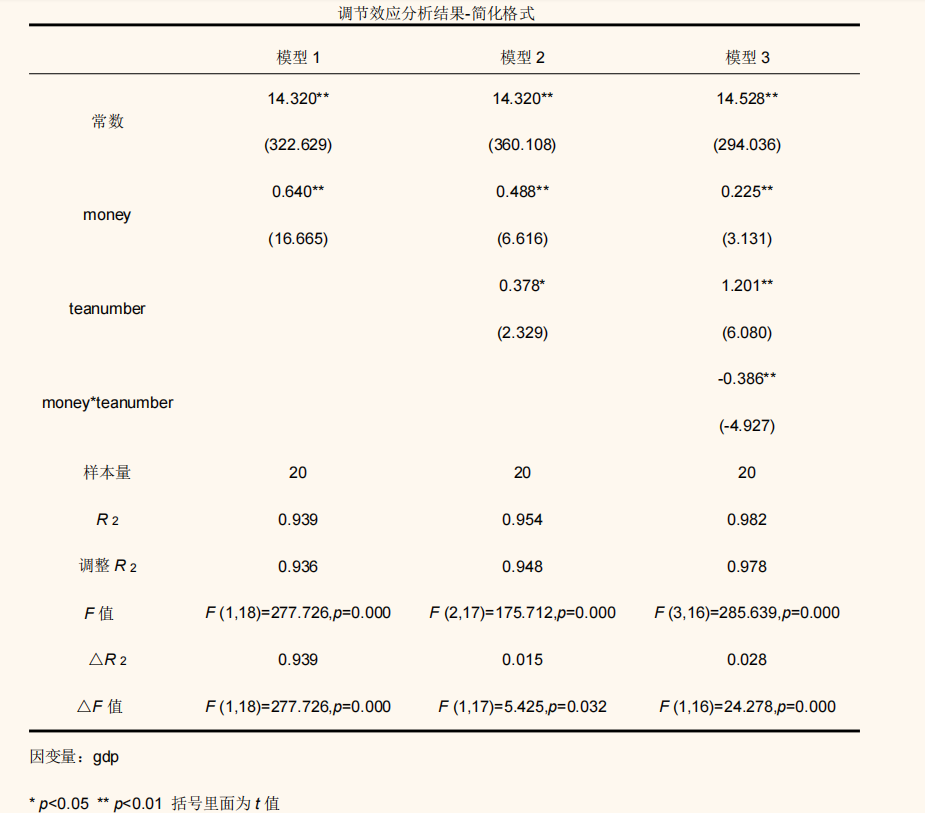

超级中学能否搭建超级城市？
———探究衡水教育发展对城市经济的拉动作用
信息管理系 杜咏曦
信息管理系 王雨辰
前言
教育在国家发展过程中起着极为重要的作用，推进我国教育现代化、建设教育强国、办好人民满意的教育，具有重大现实意义和深远历史意义。随着教育经济学的快速发展，中国学者在改革开放之后对于教育经济学逐渐重视起来。人们逐渐认识到教育对于经济发展重要的载体功能，人们通过教育获得劳动能力和创造能力，教育的投入使得人们得以创造更高的价值，从而推动经济社会的发展。
在教育发展的过程中，人才、物质的基础等等为教育系统的发展提供了支持。
故而优质教育资源多集中在经济发达的一二线城市，教育与经济形成双向良性循环。然而，衡水作为河北省一座不起眼的小城市，却凭着“超级中学”现象异军突起，进入21世纪后创造着不败的教育神话，其经济发展水平与教育产出并不成完全正比。基于衡水的特殊现象，本文试图探究中学教育的发展是否能够促进城市的经济增长，超级中学名牌效应是否能带动衡水房地产业发展与城镇化率的提升。
目录
一、数据获取
本组从多方数据库获取了衡水与邢台国民经济指标相关数据，并进行数据预处理以便后续分析。
- 知网-统计数据库的衡水、邢台统计年鉴与中经网统计数据库中获取衡水市桃城区（市辖区）及各分县与邢台市的1999年至2019年的国民经济各类基本指标，并从中选取普通高中学生数量、学校数量、教职工数量、CPI指数、房地产投资量、GDP总量、GDP增速、城镇化率作为主要分析内容
- 百度迁徙获取2018-2023年9月各省迁入衡水与邢台人口的迁入意愿与实际迁入指数
- 衡水市教育局官网获取衡水普通高中招生政策变化情况
- 各类教育公众号及衡水一中历年喜报获取衡中清北人数
二、描述性统计
（一）GDP和房价变化：对比城市选取
根据GDP和房价水平，选取和衡水发展水平相似的邢台市作为对比城市。我们同时也考虑到了邢台市和衡水市在地理位置上相邻，在经济发展水平上相近，邢台市也没有更加突出的城市特色和特色产业，适合作为对比城市。
（二）教育水平分析：衡水特殊的教育禀赋
根据相关数据，从教育经费、在职教师数量、学校数量、在校生数量四个方面衡量衡水和邢台两个城市的教育特征，从雷达图上可以看出，两个城市的教育特征有所不同。衡水市投入更多的教育经费，同时也开设了更多的学校数量，同时衡水市在校生的数量较少，在校教师数量相对较少，并非印象中的“人海战术”，同时也反映出衡水市教师数量相对不足。
（三）户籍人口增长变化：超级中学的名牌效应
通过衡水市市区与周边区县历年来户籍人口增长率的对比，及邢台市各区县户籍人口增长率变化的对比，可以发现衡水市区会对周边区县的户籍人口有较大的吸引力，我们猜测超级中学的名牌效应会在其中发挥一定作用。
- 长期以来，与周围区县相比，衡水市市区（桃城区）的户籍人口增长率均处于稳步增长的独特地位，而周围区县则多为负增长。
- 2015年实施“三年户籍，三年学籍”政策以来，衡水市市区（桃城区）的户籍人口增长率有所减缓，周边曲线的户籍人口也逐渐从负增长转向正增长，但增长速度依然远远低于衡水市区。同对比城市——邢台市相比，衡水市市区依然保有户籍增长的优势，对周围区县的人口有一定的户籍吸引力。
（四）在校生数量增长变化：教育公平下的政策收紧
- 衡水市实施按照学籍和户籍进行划类别招生政策，对于不同的学籍和户籍的学生规定不同类别的录取学校；其中A类生录取学校的选择范围最广。随着市区的超级中学的不断发展，对周边区县学生的引力加大，为了更好地促进区域间教育公平，减少周边区县优秀生源流失的问题，衡水市市区的高中招生政策不断收紧。
- 2015年，衡水市桃城区出台“三年户籍，三年学籍”政策；2018年，衡水市桃城区出台更为严苛的”五年户籍，五年学籍“政策。
- 从衡水市市区及其他区县在校生数量增长率（当年在校生数量/上一年在校生数量-1）的对比上可以看出，2015年以来，衡水市市区的在校生数量增长率处于突出地位，和周边区县相比增长较快，虽然2015年由于缺少主城区的数据，我们无法衡量主城区的学生数量，但是其他区县的在校生数据显示，周边区县的学校经历若干年的招生寒冬，无法破冰；但在2018年，衡水市市区的在校生数量出现大幅负增长，周边区县的在校生数量实现小幅增长。而其对比城市邢台市的各个区县和各个年份之间却较为稳定。
- 由此可见，2015年政策的实施效果较好，2018年新出台的政策也有一定的约束能力，市区学生数量骤减但是各区县没有明显变化甚至有所增长，有效缓解了教育不公平效应。
三、计量分析
本组基于罗默生产函数，选取教育经费投入、学校数量、学生人数、教职工人数、清北人数作为自变量；选取GDP总量、CPI指数、房地产投资、城镇化率为因变量探究中等教育对于衡水经济发展的作用；选取迁出省份教育水平为自变量，迁入衡水意愿与实际迁入结果为因变量，探究衡水中学对其他地区人员迁入的吸引力，选取人口自然增长率为部分假设的控制变量，并选取邢台市作为衡水市对照组，以探究在同等经济发展水平下超级中学是否真正对经济增长产生效果，对自变量、因变量、控制变量进行对数变换以使得趋势线性化。
1.高中阶段教育的发展可以促进衡水市的经济增长。
模型建立
lnGDP=10.757+0.099*ln教育经费+0.375*ln学生数量+0.471*ln清北人数
lnGDP=0.562**ln教育经费+0.467*ln教育经费×ln学校数量-0.327ln学校数量+14.249**
lnGDP=14.528**+0.225**ln教育经费+1.201**ln教师数量-0.386**ln教育经费×ln教师数量

结果分析
通过回归分析，可得出衡水市教育经费投入增加会促进学生数量与清北人数的提升，最终促进GDP的提高，教职工人数与学校数量作为调节变量对GDP产生影响。这符合经济学中教育对经济的正向影响的逻辑。同时在模型中，清北人数的回归系数最高，说明衡水中学对尖子生的培养对于提升衡水市影响力有着较强的积极作用。

2.学生数量、教职工数量、清北人数会促进房地产行业提升
模型建立
房地产投资=-56.185 + 69.780*ln学生数量
房地产投资=-502.382 + 68.219*ln教师数量
ln房地产投资=-0.612 + 0.991*ln清北人数
结果分析
根据回归分析可得，学生数量、教职工数量与清北人数对房地产行业投资有着正向影响关系，学生与教师数量的增多会带动学区房的住房需求，而清北人数的增多也会使得学区房的未来期望不断提高。同时学生数量、教师数量与房地产投资呈对数关系，边际效用递减；而清北人数与房地产投资整体呈现线性关系，说明衡水超级中学的神话持续推动着房地产业的发展。遗憾的是难以找到桃城区学区房具体数据，故未对学区房位置、租金等做进一步具体分析。
学生数量
教师数量
清北人数
3.学生数量、教职工数量、清北人数会促进CPI提高
控制变量：GDP增速
模型建立
CPI指数=-112.304 + 174.366*ln学生数量-31.204*lnGDP增速
CPI指数=-1283.451-11.880*lnGDP增速+ 172.471*ln学校数量
lnCPI指数=10.758-0.339*lnGDP增速 + 0.884*ln清北人数
结果分析
通过回归分析可知，在以gdp增速为控制变量的前提下，学校数量、学生数量与清北人数对CPI有着促进作用，会带动消费零售业的发展；与房地产投资类似，学生、学校数量对CPI的影响同样存在边际递减效应。
学生数量
教师数量
清北人数
4.清北人数会提升城镇化率
控制变量：人口自然增长率
模型建立
ln城镇化率=3.679 + 0.139*ln清北人数 + 0.012*ln人口自然增长率
结果分析
在控制自然增长率的前提下，通过回归分析，可以发现清北人数对衡水市桃城区城镇化率有着明显的促进效用，说明衡水中学极高的升学率一方面吸引了周边县城农村的人前往衡水高中就读，另一方面也吸引了其他省份慕名而来的高中学子，对提升市区城镇化率有着积极影响。
5.迁入地教育水平与衡水的迁入指数相关
依据18-23年9月各省迁入衡水的数据，本组按照教育水平为各省市进行赋分，教育水平越高分数越低，教育水平越低分数越高。随后对外省迁入地教育水平与迁入衡水的意愿进行相关分析。分析发现外省教育水平与迁入衡水的意愿无显著相关关系，但与最终迁入结果呈现正相关，即教育水平越低，迁入衡水的人数越多。这反映出衡水在教育方面对人口迁入有着极强的拉力。
迁入衡水意愿和迁入省教育水平之间的相关系数值为0.005，接近于0，并且p值为0.344>0.05，因而说明迁入衡水意愿和迁入省教育水平之间并没有相关关系。
实际迁入指数和迁入省教育水平之间的相关系数值为0.015，并且呈现出0.01水平的显著性，因而说明实际迁入指数和迁入省教育水平之间有着显著的正相关关系。
衡水VS邢台
在对衡水情况进行整体分析后，本组使用分组回归模型，对衡水和邢台进行了对比分析。回归结果显示，衡水与邢台的中学教育水平差异使得其对GDP、房地产投资、CPI、城镇化率、人口迁入指数产生差异，反映出衡水超级中学在经济发展过程中所扮演的特殊角色。
6.衡水与邢台的教育水平对GDP产生不同影响
从上表可知，邹志庄检验结果为F(5，30)=7.795，p=0.000<0.05，意味着city会对模型带来结构性变化。
7.衡水与邢台的教育水平对CPI产生不同影响
从上表可知，邹志庄检验结果为F(5，28)=7.192，p=0.000<0.05，意味着city会对模型带来结构性变化。
8.衡水与邢台的教育水平对房价水平产生不同影响
从上表可知，邹志庄检验结果为F(5，27)=4.235，p=0.006<0.05，意味着city会对模型带来结构性变化。
9.衡水与邢台的教育水平对城镇化率产生不同影响
从上表可知，邹志庄检验结果为F(5，10)=5.508，p=0.011<0.05，意味着city会对模型带来结构性变化。
10.衡水与邢台的教育水平对人口迁入指数的影响
从上表可知，邹志庄检验结果为F(2，38203)=3.433，p=0.032<0.05，意味着city会对模型带来结构性变化。
四、总结
综合分析可知，衡水桃城区全国顶尖的高中教育影响衡水市房地产投资与物价水平，最终作用于GDP增长，并使得衡水的产业结构与同等经济发展水平下的其他地区有着明显区别。在未来，衡水地区可以继续利用“超级中学”名片拉动GDP增长，但同时需要注意其影响的边际递减效应，若不能实现更高教育水平的人才培养与人才引进，超级高中对经济增长的效应始终有着其最高上限。唯有深化产业结构改革，留住人才，衡水才能在未来实现更高水平的经济发展。